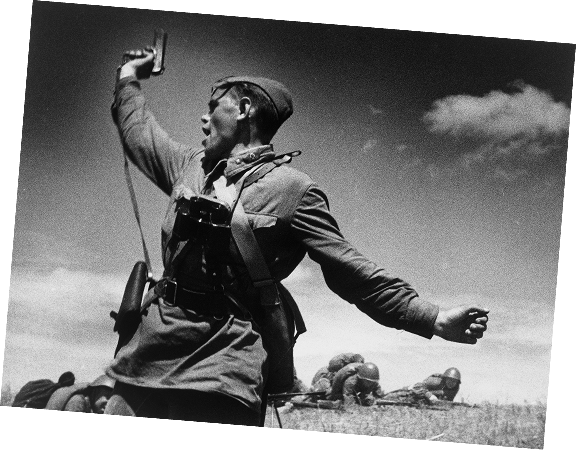

Asesinato del archiduque Francisco Fernando
Un disparo en una calle… y listo, el mundo en llamas. El asesinato del heredero austrohúngaro activó una cadena de alianzas que en semanas desató la Primera Guerra Mundial.

George Santayana
La historia es una ciencia social que estudia y narra el pasado de la humanidad mediante el análisis de fuentes. Reúne varias disciplinas y busca comprender el presente a partir de las transformaciones sociales, políticas y culturales a lo largo del tiempo.
Los eventos del siglo XX fueron como una montaña rusa de emociones para la humanidad. Hubo momentos de esperanza, avances tecnológicos increíbles, pero también tragedias que dejaron cicatrices profundas. Aquí te dejo algunos de los eventos más impactantes que marcaron esta época:
Un disparo en una calle… y listo, el mundo en llamas. El asesinato del heredero austrohúngaro activó una cadena de alianzas que en semanas desató la Primera Guerra Mundial.
Japón golpea sin aviso a EE.UU. en cuestión de horas. Resultado: Estados Unidos entra de lleno en la Segunda Guerra Mundial. Ese día pasó de “no nos metemos” a “vamos con todo”.
Dos bombas, dos ciudades, y el mundo entendió que la guerra había cambiado para siempre. En días, Japón se rinde. Se acabó la guerra… pero empezó la era nuclear.
Una noche de confusión política… y la gente simplemente cruzó. El muro que dividía ideologías cayó casi sin disparos. Fue como si el siglo dijera: “ya estuvo bueno”.
Las guerras en general son como terremotos sociales que transforman el mundo. Pero no solo cambian fronteras: destruyen vidas, separan familias y dejan cicatrices que duran generaciones.
"En la guerra no mueren números, mueren personas."
Incluso en la guerra existen límites. Cuando esos límites se rompen, no hablamos de estrategia, sino de crimen.
Los crímenes de guerra son violaciones graves de las normas internacionales establecidas en las Convenciones de Ginebra: ataques contra civiles, tortura, ejecuciones sin juicio y destrucción injustificada.
El exterminio sistemático de millones de personas durante la Segunda Guerra Mundial, basado en ideología racial.
En 1937, miles de civiles fueron asesinados y abusados durante la invasión japonesa a China.
En 1968, soldados estadounidenses asesinaron a cientos de civiles en Vietnam.
Tras la guerra, el mundo intentó imponer justicia. Los Juicios de Núremberg marcaron un precedente: seguir órdenes no es excusa para cometer atrocidades.
La historia del siglo XX no es solo un registro de guerras, es un recordatorio permanente de hasta dónde puede llegar la humanidad.